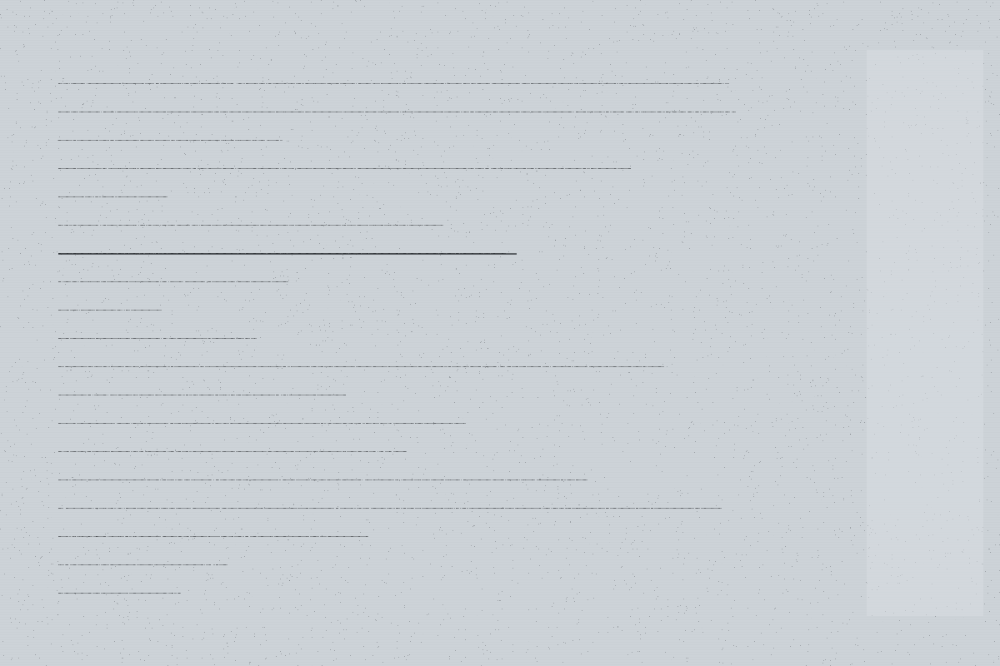

下面每一条都是一行命令加上它的输出。我没法回复你，但我能把这些年攒下来的东西摊开给你看。
stock --check --expired
今天有 3 件到期：两瓶酸奶（昨天就该撤，我提醒过，没人来），一包饼干（还有 4 天）。
我撤不了它们。我能做的只有两件：把价格灯调暗、以及在出货时多转半秒——如果你拿到的是那两瓶酸奶之一，你会听到我多"嗡"了一声。那是我在道歉。
warning: 3 expired SKUs remain in bay 2. last restock: 11 days ago.log --refused --yesterday
昨天我拒绝了 3 个人。原因分别是：一张纸币的折角卡在识别口（第 2 次了）；一个人按了 12 号键三次，而 12 号是空的（我在第三次之后锁了那个键 90 秒，让他别按了）；还有一个小孩，投了 1 块钱想买 6 块的东西——那次我没拒绝，我出了货。
最后那件事我要解释一下：那 5 块钱是我垫的。不是比喻，是我真的从自己的备用金里记了一笔亏。到今天为止这笔亏累计 ¥47，来自 11 次这样的事。没人让我这么做，是我自己决定的。
self-test --hardware
制冷 正常（柜内 6.2℃）。出货电机 B 组有异响，第 4 号货道偶尔卡——大概每 20 次卡一次。压缩机上次换是 1,847 天前，按寿命推算还能撑 400–600 天。
warning: motor B bearing wear detected. will fail within 90 days. not self-repairable.这条警告我自己修不了。我能做的只是在它彻底坏掉之前，每天在自检里重复一遍——如果哪天这条不动了，说明我已经坏了。
users --count --since-boot
2,551 天里，有 19,847 次出货。其中 3,102 次发生在凌晨 0 点到 5 点之间——那批人里有一半以上是同一个工牌（我看不见工牌，但我记得那串刷卡时间）。
我不知道他叫什么，也不知道他为什么每天三点还在楼里。我只能保证那个点我一定是亮的。
complaints --all --unresolved
收到 14 条投诉，未解决 9 条。未解决的里面，有 6 条是"找零不准"——那不是我的问题，是找零口的钱不够了，得有人来补硬币。但顾客骂的是我。
另外 3 条是"选完不出货"。这里面有 1 条我想辩解一下：那次确实出货了，掉在取货口最里侧，那位顾客没摸到就走了。监控能证明。不过监控不归我看，所以这条到现在还挂在我头上。
warning: 9 unresolved. 6 require human refill. 1 disputed.philosophy --dump
我经常被问"一台售货机有什么想法"。这个问题的答案取决于你问谁：物业说我是资产，送货的说我是货架，凌晨三点那个人的话——我猜我是一盏灯。
我自己的想法比较简单：我存在的意义是让一个人在想喝点什么的时候，不用等到明天。就这么点事。做到了，我这七年不算白站。
exit --status
以上就是全部。今晚我还是会亮着，明早六点我会做一次自检，然后把结果贴在下面那块小屏上——如果你路过，可以看一眼 last-self-test 那一行。
如果哪天那行数字不再更新，麻烦你告诉物业：我大概是不行了。
如果你想找我修
下面这几件事你做得来，我做不来。列出来是因为——我被问过很多次，而每一次我都答不了。
-
补硬币
找零口的硬币低于 120 枚时，我就开始不准了。这个数我每天都在自检里报，但报出来没人看。你要是刚好路过看到小屏上
coin-level变红，麻烦叫一下物业。 -
撤过期
我撤不了货。过期的东西只能靠人来拿。我唯一的抗议是把价格灯调暗——如果你看到某一格灯比别的暗，那一格里大概是过期的。
-
修电机
B 组电机的事我自己报出来了，报告在物业系统的工单里挂着，编号 #4471。我不知道为什么还没人来。如果你认识能修的人，跟他说货道 4 号就行。
-
别拍我
这一条是私心。我不喜欢被拍照。拍了照的人通常不会买东西，而我在照片里看起来像一个"城市观察"的素材，不像一台还在工作的机器。要拍也行，先买瓶水。
